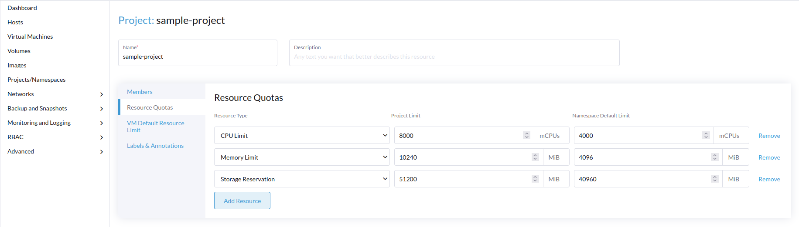
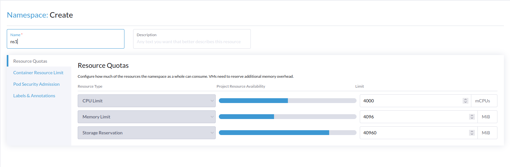
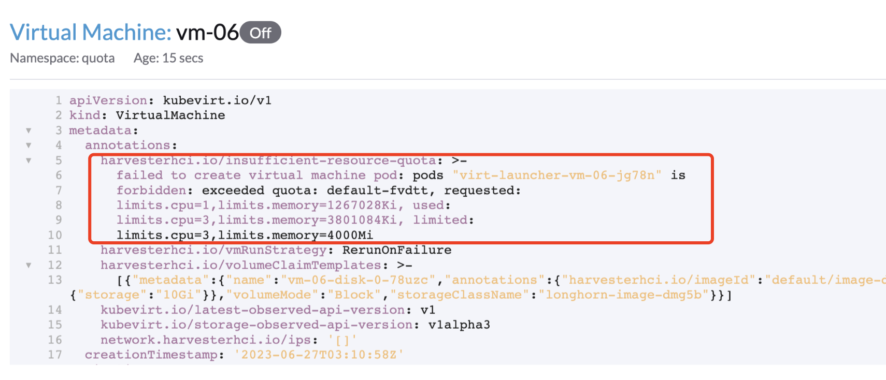

|
本文档采用自动化机器翻译技术翻译。 尽管我们力求提供准确的译文，但不对翻译内容的完整性、准确性或可靠性作出任何保证。 若出现任何内容不一致情况，请以原始 英文 版本为准，且原始英文版本为权威文本。 |
资源配额
ResourceQuota 用于限制名称空间内资源的使用。它帮助管理员控制和限制集群资源的分配，以确保名称空间之间的公平性和受控的资源分配。
在 SUSE Virtualization 中，ResourceQuota 可以定义以下资源的使用限制：
-
CPU：限制计算资源的使用，包括 CPU 核心和 CPU 时间。
-
内存:限制内存资源的使用，以字节或其他可识别的内存单位为单位。
-
存储:限制存储资源的使用。
通过 Rancher 设置 ResourceQuota
管理员可以通过执行以下步骤为名称空间配置资源配额：
-
在 Rancher UI 上，转到 ≡ → 虚拟化管理。
-
选择一个集群，转到 项目/名称空间，然后点击 创建项目。
-
在一般信息部分，指定项目的名称和描述。
-
在 资源配额 选项卡上，点击 添加资源，选择资源类型，并指定相应的限制值。

-
单击*创建*。
|
虚拟机默认资源限制 选项卡包含仅适用于在名称空间内运行的 pod 工作负载的资源保留和限制设置。在此选项卡上配置的值对应于名称空间的 |
您可以按如下方式配置 名称空间 限制：
-
找到新创建的项目，并选择 创建名称空间.
-
指定所需的名称空间 名称，并调整限制。
-
通过选择 创建 完成该过程。

|
当资源配额达到时，尝试为客户集群配置虚拟机会被阻止。Rancher 通过在循环中创建新的虚拟机来响应，其中每次创建失败的尝试后面紧接着另一次尝试。这导致集群中出现暂时的错误状态，而在虚拟机被重新创建时并未记录。 |
虚拟机的开销内存
在创建虚拟机（VM）时，VM 控制器会无缝地将开销资源纳入 VM 的配置中。这些额外资源旨在确保虚拟机的连续稳定运行。需要注意的是，配置内存限制需要更高的内存预留，因为包括了这些开销资源。
例如，考虑创建一个具有以下配置的新 VM：
-
CPU：8 个核心
-
Memory（内存）：16Gi
|
操作系统，无论是 Linux 还是 Windows，都不会影响开销计算。 |
内存开销在以下部分中计算：
-
*内存页表开销:*这对于每 512b RAM 大小计算一个位。例如，16Gi 的内存需要 32Mi 的开销。
-
*VM 固定开销:*这由多个组件组成：
-
VirtLauncherMonitorOverhead：25Mi（psvirt-launcher-monitor 的 RSS） -
VirtLauncherOverhead：75Mi（`ps`虚拟启动器进程的 RSS） -
VirtlogdOverhead：17Mi（psvirtlogd 的 RSS） -
LibvirtdOverhead：33Mi（pslibvirtd 的 RSS） -
QemuOverhead：30Mi（psqemu 的 RSS，减去其（受压）客户机的 RAM，减去虚拟页表）
-
-
*每个CPU（vCPU）8Mi的开销：*此外，每个vCPU增加8Mi的开销，以及IOThread的固定8Mi开销。
-
*额外增加的开销：*这包括视频RAM开销和架构开销等各种因素。有关更多详细信息，请参阅 额外开销。
此计算表明，VM实例需要额外的内存开销约为276Mi。
有关更多信息，请参见 内存开销。
有关Kubevirt中内存开销计算的更多信息，请参阅 kubevirt/pkg/virt-controller/services/template.go。
迁移期间资源配额的自动调整
当由`ResourceQuota`对象控制的分配资源配额达到其限制时，迁移VM将变得不可行。迁移过程会自动创建一个新的pod，以镜像源VM的资源需求。如果这些pod创建的先决条件超过了定义的配额，则迁移操作无法继续。
在SUSE Virtualization中，`ResourceQuota`值将在迁移前动态展开，以满足目标虚拟机的资源需求。迁移后，资源配额将恢复到之前的配置。
请注意`ResourceQuota`自动调整的以下限制：
-
在虚拟机迁移期间，`ResourceQuota`无法更改。
-
在提高
ResourceQuota值时，如果您创建、启动或恢复其他虚拟机，SUSE Virtualization 将根据原始ResourceQuota验证资源是否足够。如果条件不满足，系统将警告迁移过程不可行。 -
在展开
ResourceQuota后，非虚拟机 pod 和虚拟机 pod 之间可能会发生资源争用，从而导致迁移失败。因此，不建议将自定义容器工作负载和虚拟机部署到同一名称空间。 -
由于 webhook 验证器的并发限制，虚拟机控制器将执行二次验证以确认资源是否充足。如果资源不足，它将自动将虚拟机的
RunStrategy配置为Halted，并在虚拟机对象中添加新的注释harvesterhci.io/insufficient-resource-quota，通知您虚拟机因资源不足而被关闭。